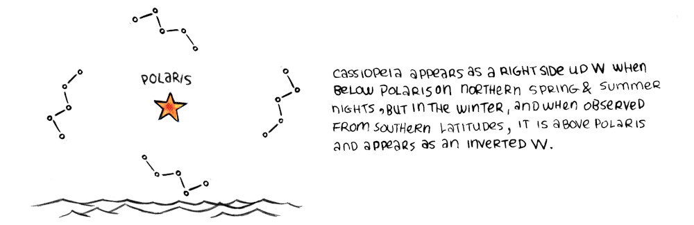
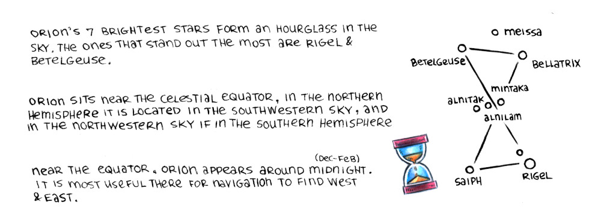

By memorizing the rising and setting positions of many stars sailors can find out where they are in the world.
They act as a compass.
List of stars and their constellations: Caph II (Cassiopeia), Merak (Ursa Major), Capella (Auriga), Deneb (Cygnus), Vega (Lyra), Castor (Gemini), Polluz (Gemini), Alcyone (Taurus), Arcturus (Bootes), Alderbaran (Taurus), Regulus (Lego), Altair (Aquila), Betelgeuse (Orion), Procyon (Canis Minor), Mintaka (Orion), Rigel (Orion), Spica (Virgo), Sirius (Canis Major), Minkar (Corvus), Formalhaul (Piscis Austrinus), Shaula (Scorpio), Canopus (Capina), Becrux (Southern Cross), and Acrux (Southern Cross).
For those in the northern hemisphere, the most important star is Polaris(North Star). It burns bright in the sky and sits directly in the north (within 1 degree of the celestial north pole).
If you can find Polaris in the sky, then you know where north is. Polaris stays where it is while the rest of the stars move overhead. If you look north following a compass you'll find Polaris.
How do you find Polaris without a compass?
1. Find the Big Dipper (part of Ursa Major) 2. Use the Big Dipper's pointer stars to find the Little Dipper (part of Ursa Minor). 3. Polaris sits on the tail end of the Little Dipper.
Finding the Big Dipper first is easier because it is bright and big. The Little Dipper is somewhat dim and more difficult to locate.
Polaris is part of a group of stars named The Little Dipper, shaped like a bent laddle.
If you follow Merak and Dubhe, the 2 stars making up the farthest edge of the Big Dipper's bowl in a straight line, you'll find the Little Dipper.
The Big Dipper's position in the sky varies throughout the seasons.
Cassiopeia, shaped like a squished W, is a neighboring constellation which can further help ensure that you have correctly identified Polaris.
Cassiopeia appears as a right side up W when below Polaris on northern spring and summer nights, but in the winter, and when observed from southern latitudes, it is above Polaris and appears as an inverted W.
Orion's 7 brightest stars form an hourglass in the sky. The ones that stand out the most are Rigel and Betelgeuse.
Orion sits near the celestial equator, in the northern hemisphere it is located in the southerwestern sky, and in the northwestern sky if in the southern hemisphere.
Near the equator, Orion appear around midnight(dec-feb). It is most useful there for navigation to find west and east.
Aligning some of Orion's stars will help find neighboring stars in the sky. In the northern hemisphere, Orion is most visible during the winter(jan-apr), which means it is most visible in the southern hemisphere summer.
In the north hemisohere summer (and south hemisphere winter), Orion is out in the day time, therefore not useful for navigation. Although, in Antarctica Orion is visible at twilight for a few hours near local noon, appearing low near the horizon in the north sky.

In the southern hemisphere sailors look to the southern cross(crux) to find the north.
Unlike Polaris, it isn't as near to the pole, but it is a useful marker to help locate it. It is visible any time of the year, even near the horizon near the tropical portion of the northern hemisphere.
Drawing a line from the star gacrux to acrux, about 4 1/2 times the length of that same line, leads to a point near the horizon near the southern celestial pole (south).
It is possible to use the southern pointers(alpha and beta centauri) to help find that point.
If the star(or constellation) you are looking for is covered by clouds, knowing the positions of other celestial bodies will help fill in the blanks.